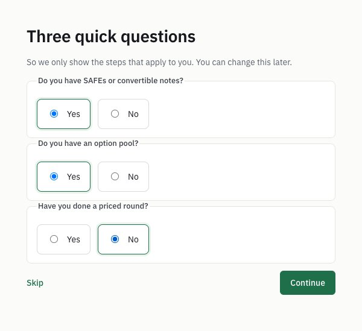

A 5-post thread. Each post ≤280 characters, a screenshot on posts 1–4, the link only in the first reply.
Before you post
Weekdays, morning or midday.
Post the thread, then the link as a reply to post 1.
0–1 hashtags (none used here).
Reply to every comment in the first hour: replies count most.
Post 1173/280 chars
Try a cap table app before you type in yours.
Capfolder 0.1.3 opens a sample company: 2 founders, 2 employees, an option pool and 3 SAFEs. Click anything. Nothing is saved.
Alt text: The sample company Acme Inc. in Capfolder: a banner says Sample company, nothing here is real. 8,000,000 shares fully diluted, Tim Apple 50%, Steve Jobs 37.5%, two employee grants, the option pool, SAFEs, and a What's missing list with 11 gaps. · Download image
Post 2121/280 chars
Before you set up your own: 3 yes/no questions.
SAFEs? Option pool? Priced round?
The steps that don't apply disappear.

Alt text: Three quick questions: Do you have SAFEs or convertible notes? Do you have an option pool? Have you done a priced round? Each with Yes and No. · Download image
Post 3128/280 chars
Then a Get started list: 7 steps.
The ticks are computed from the cap table, never stored, so the list can't drift out of date.
Alt text: Capfolder's Get started list: 3 of 7 done. Company details, share classes and founders are Done; option pool, SAFEs, signed documents and Ask AI each have a button. · Download image
Post 4130/280 chars
Plus a 6-stop tour, and a "?" next to valuation cap, discount, cliff, par value and vesting start.
Settings → Tour runs it again.
Alt text: Capfolder's tour on the sample company: the cap table is highlighted with a popover, Your cap table, stop 2 of 6. · Download image
Post 5139/280 chars
Honest limit: the sample is read-only, so you can't try e-signing in it.
Founders: what took longest when you first set up your cap table?
First reply (the link goes here, not in the posts)171/280 chars
Free, open source, and your cap table stays in a folder on your own computer. What's new in 0.1.3, with screenshots: https://capfolder.com/blog/try-it-on-a-sample-company/